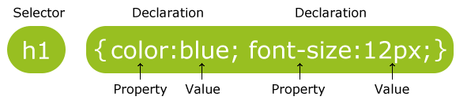

CSS is used to style web pages, including the design, layout and variations in display for different devices and screen sizes. This means that you can have different style sheet for computers, tablets and mobile devices. You can also have one style sheet that accomodates for each device.
When tags like <font>, and color attributes were added to the HTML 3.2 specification, it started a nightmare for web developers. Development of large websites, where fonts and color information were added to every single page, became a long and expensive process.
To solve this problem, the World Wide Web Consortium (W3C) created CSS.
You have might have already seen some CSS from the HTML lessons, but to refresh your memory this is its simple form:
You reference CSS using the <link> tag in the <head> section of your HTML document. This will look something like this: <link rel="stylesheet" type="text/css" href="style.css">, which will add style.css file to the current document. You will have to do this to every HTML document that you wish to style.
CSS is used by typing a seclector such as h1 to select all <h1> tags, then adding property : value pair.
